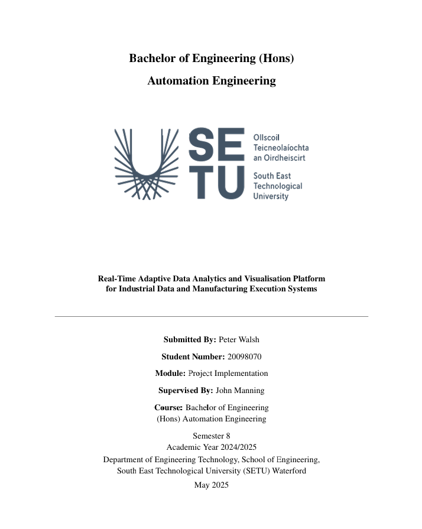

Sample Extracts
Dissertation Extracts
The following visuals are selected pages extracted from the final dissertation submitted for the Project Implementation.



The following visuals are selected pages extracted from the final dissertation submitted for the Project Implementation.